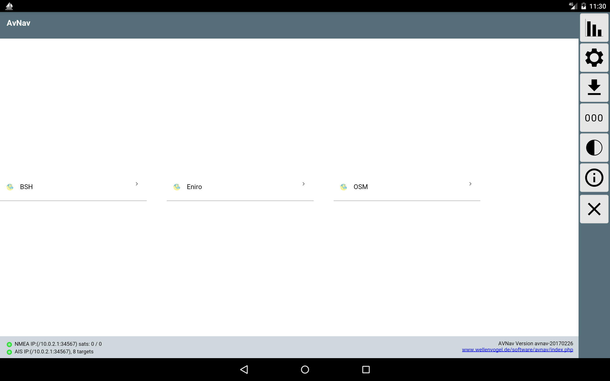
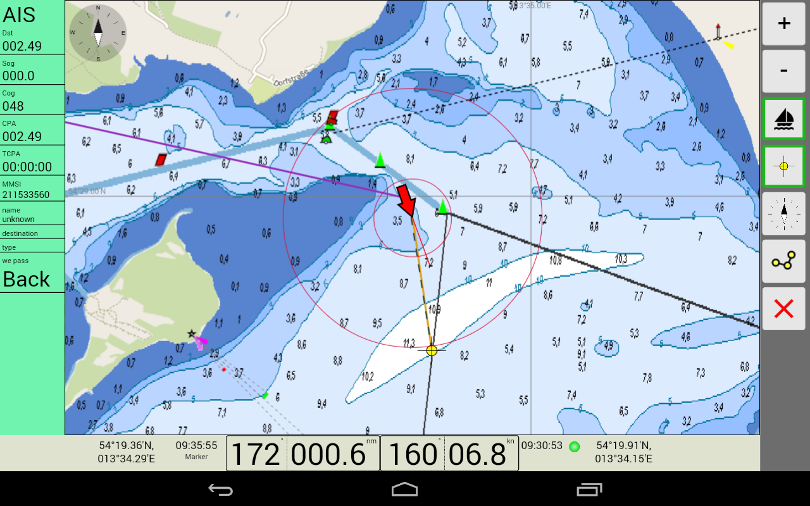
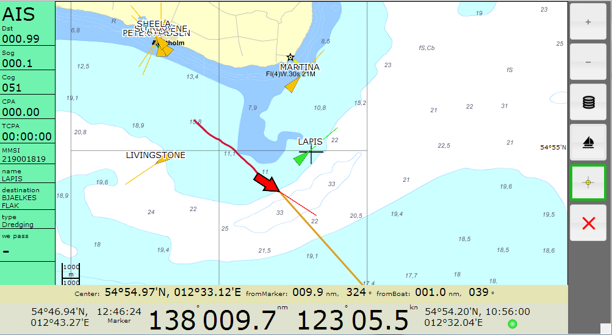
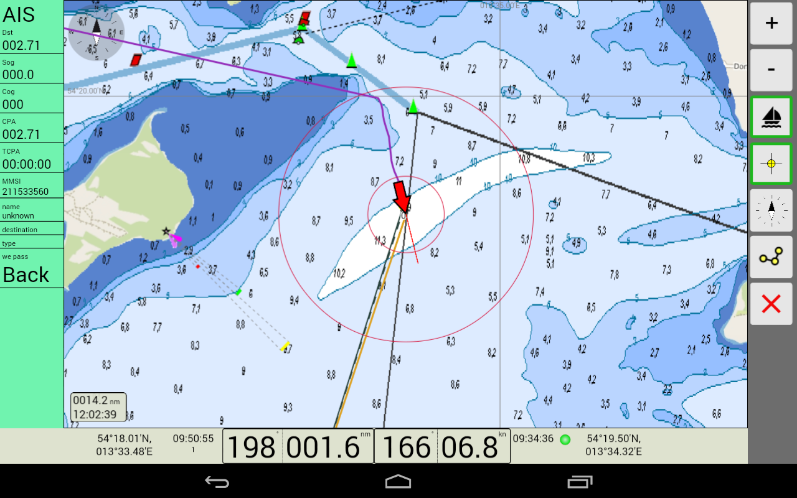
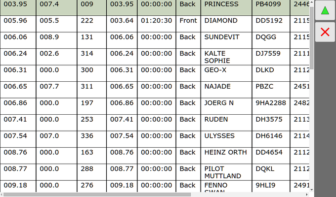
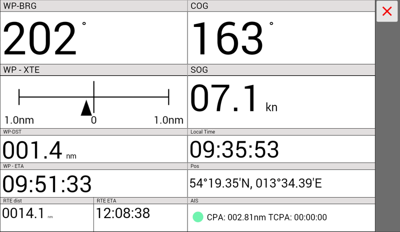
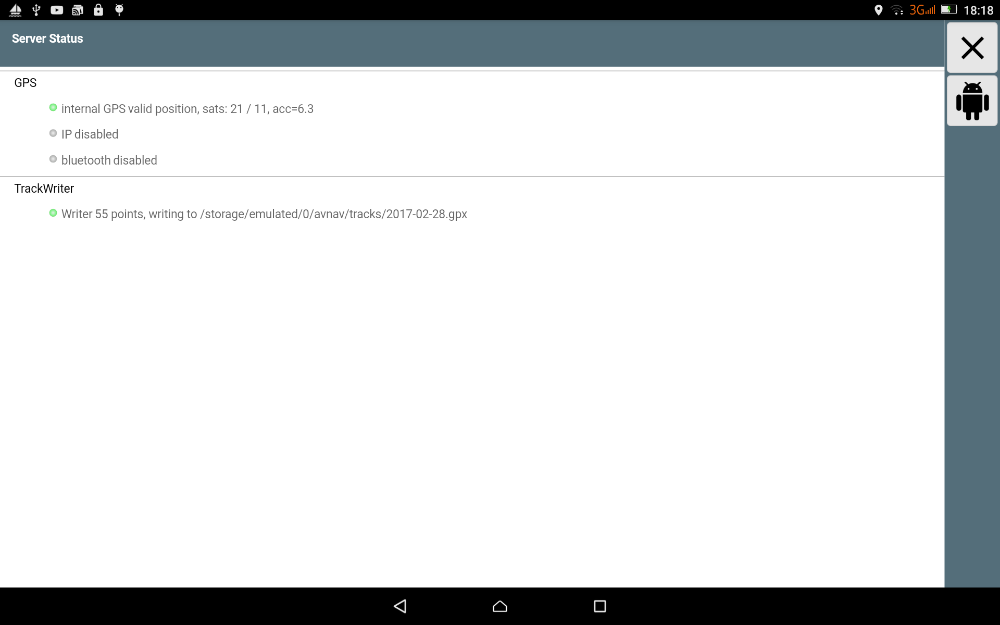
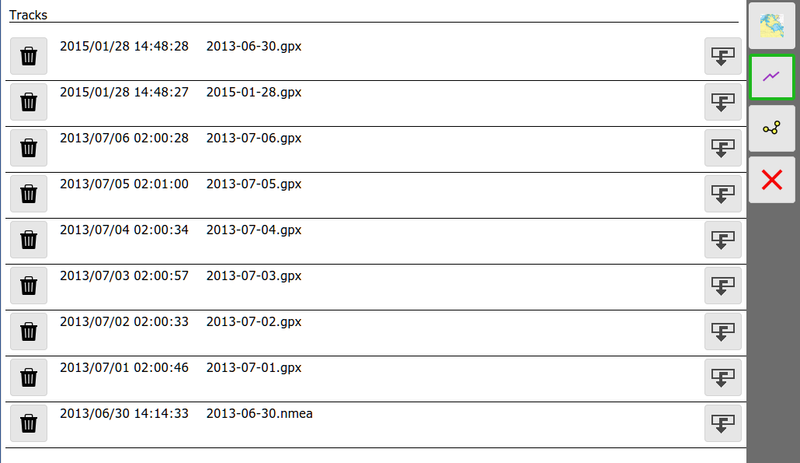
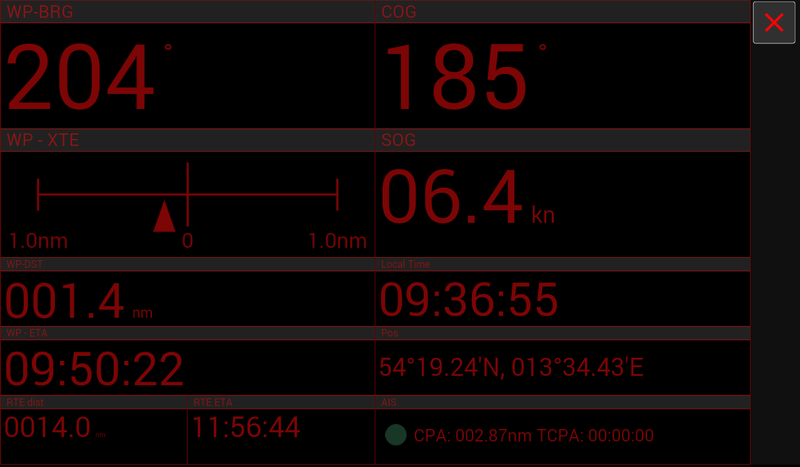

Stand 2015/01/23
Ein Hinweis vorweg:
Ich kann keine Garantie für die Funktion der App übernehmen, insbesondere die Nutzung zu Navigationszwecken geschieht auf eigenes Risiko. In jedem Falle empfehle ich einen intensiven Test der Genauigkeit der Darstellung und des verwendeten Kartenmaterials.
Die wesentlichen Fähigkeiten:
Darstellung der Kartendaten (blattschnittfrei je Satz), mit den enstprechenden Funktionen (Zoom, move,...)
Dartstellung der aktuellen Schiffsposition mit Kurs, Geschwindigkeit (mit Lock der Karte auf Schiffsposition)
Darstellung des aktuellen Tracks (der Track wird auch in einer gpx Datei gespeichert)
Setzen eines Wegepunktes, Anzeige von Richtung,Entfernung,ETA
AIS Anzeige mit Darstellung in der Karte, AIS Target am nächsten zum Schiff, Warnung bei CPA < 500m, CPA,TCPA, AIS Infos
Erzeugen einer Route (mit Editiermöglichkeit zu jedem Zeitpunkt)
Im Folgenden beschreibe ich kurz die Bedienung der aktuellen Version, danach einige technische Details.
Nach dem Aufruf der Start-Url landet man auf der Einstigesseite.

Im Hauptbereich der Seite befindet sich die Liste der vom Server gefundenen Kartensätze (beim Raspi-Server gemf files unter /data/avnav/charts, in der Android App unter charts im gewählten Verzeichnis). Durch Anklicken gelang man zur Navigationsseite mit dem enstprechenden Kartensatz.
Wie auf allen Seiten befindet sich am rechten Rand eine Button-Leiste. Von hier aus erreich man eine Status-Seite des Servers und die Hilfe.
Dieses Bild zeigt einen gesetzten Marker (locked) – das Boot ist auf Kurs.

Dies ist die Hauptansicht. In der Mitte befindet sich die Kartenansicht mit der Schiffsposition (roter Pfeil). Die gelben und grünen Dreiecke mit Pfeilspitzen sind empfangene AIS Ziele in der Nähe (10nm) mit ihrem aktuellen Kurs sowie Name oder MMSI. Die organgefarbene Linie zeigt zum aktiven Wegepunkt. Die gepunktete Linie zeigt den Kurs vom Start der Navigation zum Wegepunkt (Sollkurs). Die Karte kann mit den normalen Gesten verschoben oder gezoomt werden, zum zoomen können auch die Buttons +/- auf der rechten Leiste benutzt werden.Wenn (wie im Bild) der Schiff-Button einen grünen Rand hat ("Schiff lock"), ist die Karten-Mitte auf die Schiffsposition fixiert und springt immer wieder dahin zurück.
Um das Schiff kann man bis zu 3 Kreise in entsprechenden Entfernungen einstellen um Abstände zu schätzen (Über settings->Navigation Display, Standard 300m und 1000m).
Links befindet sich die Darstellung des nächsten AIS Zieles (geringste momentane Entfernung). Dieses färbt sich rot, wenn eine CPA von 500m unterschritten wird. Gelb bedeuted, dass nicht das nächste Ziel sondern ein separat ausgewähltes Ziel (siehe unten AIS) angezeigt wird. Ein Klick auf diese Fläche oder ein AIS Ziel auf der Karte führt auf die AIS Info Liste (s.u.).
Im unteren Bereich befindet sich die Anzeige der wichtigsten Navigationsdaten. Links die Daten des aktuellen Wegepunktes (Marker):
Position
ETA
Kurs
Distanz (nm)
Danach folgen die Schiffsdaten:
Kurs
Geschwindigkeit (kn)
Position
aktuelle (lokale) Zeit vom GPS
GPS Indikator: grün – GPS Daten vorhanden, rot: keine Daten
Ein Klick auf die linke bzw. rechte Seite der Leiste zentriert die Karte jeweils auf den Wegepunkt bzw. die Bootsposition. Ein Klick auf die GPS-Position führt zur GPS-Datenanzeige.
Auf der rechten Seite befindet sich eine Button-Leiste:
|
Button |
Funktion |
|---|---|
|
+ |
Zoom in |
|
- |
Zoom out |
|
|
Boat „lock“. Wenn dieser Lock eingeschaltet ist (grüner Rand) wird die Karte immer auf die Bootsposition zentriert. |
|
|
Marker lock. Wenn der Lock ausgeschaltet ist, springt der Marker in die Mitte der angezeigten Karte. In diesem Zustand kann man die Karte verschieben bis sich der Marker an der gewünschten Stelle (=Wegepunkt) befindet. Mit Klick auf den Marker button erscheint ein grüner Rand und die Kurslinie zum Marker wird angezeigt. Der Marker bleibt auf dieser Position. |
| "Course Up" Wenn eingeschaltet, wird die Karte so gedreht, dass
die Vorausrichtung oben ist. Sonst "North Up". |
|
| Routing mode. Wechselt zur Route Edit Seite | |
|
|
Zurück zur Einstiegsseite. Die aktuelle Kartenposition, die Marker-Position und der aktuelle zoom bleiben erhalten wenn auf einen anderen Kartensatz gewechselt wird. |
Eine typische Bedienfolge:
Waypoint setzen:
unlock Boot->unlock Marker->Karte verschieben bis Marker auf gewünschter Pos (Zoom nutzen)->lock Marker->lock Boot
Wenn man einen Wegepunkt aktiv hat (Marker Button grün) und die Karte nicht auf das Schiff "gelockt" ist (Schiffsbutton nicht grün), wird beim Bewegen der Karte ein Kreuz im Zentrum gezeigt und unten erscheint eine Anzeig des aktuellen Abstandes vom Marker bzw. Schiff zum Kartenmittelpunkt. Damit kann man einfache Peilungen machen - Mittelpunkt auf Peilziel verschieben und Peilung ablesen.

Die Anzeige verschwindet nach 45s automatisch, wenn die Karte nicht bewegt wird, alternativ durch Klick auf die Daten.
Auf der Routing Seite kann man eine Route bearbeiten bzw. editieren. Aufgerufen wird sie durch den Routting Button ().
Zu jeder Zeit gibt es einen aktiven Wegepunkt (rot dargestellt, links in der Anzeige rot markiert und oben in der Wegepunkt-Box angezeigt). Die meisten Aktionen bezihen sich auf diesen Wegepunkt. Er kann durch Anklicken links, durch die Pfeiltasten oben oder durch anklicken auf der Karte geändert werden.
Wenn man die momentan aktive Route bearbeitet, wird das durch einen roten Rahmen links um die Routen-Info angezeigt.
Neben den Standard buttons der Navigationsseite wird eine zusätzliche Leiste mit routing buttons eingeblendet:
| Setzen eines neuen Wegepunktes in der Route. Der Kartenmittelpunkt (+) wird zu einem neuen Wegepunkt. Der neue Wegepunkt wird nach dem aktiven Wegepunkt in die Route eingefügt. Alle Routen-Daten werden neu berechnet. | |
| Entfernen des aktuellen Wegepunktes aus der Route. | |
| Setzen des aktuellen Wegepunktes auf den Kartenmittelpunkt (+) |
|
| Starten der Route. Die Route wird (beginnend mit dem aktuellen
Wegepunkt) aktiviert (und der Edit-Modus wird verlassen) |
|
| Umkehren der Route | |
| Löschen der aktuellen Route (alle Wegepunkte werden gelöscht) |
Ein Klick auf den Button verläßt den Editier-Modus ohne das die Route aktiv wird. Falls eine andere als die aktive Route editiert wurde, geht die Anzeige jetzt zur aktiven Route zurück.
Auf der linken Seite werden die Wegepunkte der aktuellen Route angezeigt. Dazu jeweils die Kurse und Distanzen für die Abschnitte. Im oberen Teil die Gesamtlänge der Route sowie die Gesamtstrecke sowie die ETA. Durch Anklicken kann man einen Wegepunkt aktivieren.
Im oberen "Waypoint" Feld (nur sichtbar auf Mobilgeräten) kann man den Namen des Wegepunktes ändern und durch die Wegepunkte navigieren.
Ein Klick auf das Route Info Feld (links oben) führt zur Auswahl der vorhandenen Routen.

Hier kann man Routen löschen, herunterladen, Routen vom Tablet auf den Raspberry laden oder eine Route unter einem neuen Namen speichern. Routen mit dem Stecker-Symbol sind auf dem Raspberry vorhanden (und können nur geändert werden, wenn man im connected mode ist). Die aktive Route ist mit einem roten Punkt gekennzeichnet, die ausgewählte mit einem grünen.
Durch den  Button
öffnet man die ausgewählte Route im Editor, der Cancel-Button geht zum
Editor mit der ursprünglichen Route zurück.
Button
öffnet man die ausgewählte Route im Editor, der Cancel-Button geht zum
Editor mit der ursprünglichen Route zurück.
Wenn eine Route aktiv ist, ändert sich das Navigationsdisplay und enthält die noch zurückzulegende Strecke sowie die ETA (links unten):
Der nächste Wegepunkt der Route wird der aktive.
In diesem Modus erfolgt eine automatische Weiterschaltung zum nächsten Wegepunkt, wenn die folgenden Bedingungen erfüllt sind:
Falls keine automatische Weiterschaltung erfolgt (z.B. weil man nicht dicht genug am WP ist), kann man kurz den Routen-Editor aktivieren, oben (->) zum nächsten WP schalten und diesen aktivieren ().
Mit einem Klick auf die AIS Info (oder auf ein AIS Target in der Karte) gelangt man zur AIS Übersicht:

Auf dieser Seite sieht man alle empfangenen AIS Ziele im Umkreis von ca.
10nm zur Bootsposition (sortiert nach CPA). Mit Klick auf eine Zeile
springt man zurück zur Karten-Anzeige mit dem gewählten AIS Ziel im
Zentrum. Das gewählte Ziel erscheint auch im AIS Info Fenster (dieses
färbt sich gelb). Ein Klick auf den grünen Pfeil schaltet wieder in den
„Normalmodus“ - d.h. Anzeige des nächsten AIS Zieles.
Mit dem zurück Button geht es unverändert zur Karten-Anzeige zurück.
Über den Button (000) auf der Start-Seite oder einen Klick auf die Position (rechts unten) auf der Navi-Seite gelangt man zu einer Anzeige der GPS-Daten ohne Karte.

Wichtig ist hier insbesondere der Status der „Serial reader“ - dieser
zeigt, ob sie NMEA Daten empfangen.
Von der Startseite kommt man mit dem Button  zur Download-/Upload Seite. Auf dieser Seite kann man Tracks, Routen und
Karten herunterladen oder auf den Raspberry hochladen und sie dort auch
löschen.
zur Download-/Upload Seite. Auf dieser Seite kann man Tracks, Routen und
Karten herunterladen oder auf den Raspberry hochladen und sie dort auch
löschen.
Hochladen/Löschen funktionert nur im connected Mode.
Um im Dunkeln nicht zu blenden, kann man auf einen Nachtmodus umstellen (button auf der Startseite).
|
Library |
Link |
Lizenz |
|---|---|---|
|
OpenLayers 3 (3.1.1) |
2-clause BSD licence | |
|
Jquery 1.9.1. |
MIT licence | |
|
Tiler tools |
MIT licence | |
|
Movable type |
MIT licence | |
|
gpsd |
||
| less 1.7.3 | Apache 2 | |
| rangeslider | https://github.com/andreruffert/rangeslider.js | MIT licence |
| JSColor | http://jscolor.com | LGPL |
| Free Icons | http://www.tutorial9.net/downloads/108-mono-icons-huge-set-of-minimal-icons/ | free, no attribution |
| gpxpy | https://github.com/tkrajina/gpxpy | Apache 2 |
Diese Software: MIT Licence
Copyright (c) 2013 Andreas Vogel http://www.wellenvogel.de
Permission is hereby granted, free of charge, to any person obtaining
a copy
of this software and associated documentation files (the "Software"),
to deal
in the Software without restriction, including without limitation the
rights
to use, copy, modify, merge, publish, distribute, sublicense, and/or
sell
copies of the Software, and to permit persons to whom the Software is
furnished to do so, subject to the following conditions:
The above copyright notice and this permission notice shall be
included in
all copies or substantial portions of the Software.
THE SOFTWARE IS PROVIDED "AS IS", WITHOUT WARRANTY OF ANY KIND,
EXPRESS OR
IMPLIED, INCLUDING BUT NOT LIMITED TO THE WARRANTIES OF
MERCHANTABILITY,
FITNESS FOR A PARTICULAR PURPOSE AND NONINFRINGEMENT. IN NO EVENT
SHALL THE
AUTHORS OR COPYRIGHT HOLDERS BE LIABLE FOR ANY CLAIM, DAMAGES OR OTHER
LIABILITY, WHETHER IN AN ACTION OF CONTRACT, TORT OR OTHERWISE,
ARISING FROM,
OUT OF OR IN CONNECTION WITH THE SOFTWARE OR THE USE OR OTHER DEALINGS
IN
THE SOFTWARE.
Die WebApp besteht aus einem HTML Gerüst (avnav_viewer.html) sowie den eingebundenen JavaScript Bibliotheken und einem JavaScript Anteil (avnav_min.js). Die Darstellung ist weitgehend von der eigentlichen Funktion entkoppelt und wird per css (unter Nutzung von less) gesteuert. Man kann die Darstellung in der HTMl Datei und in avnav_viewer.less weitgehend anpassen.
Die Kommunikation erfolgt durch einfache GET/POST requests zur url http://avnav/viewer/avnav_navi.php, dann folgen Parameter, die den request beschreiben. Die Antworten vom server sind json kodiert.
Die wichtigsten requests sind:
gps: Abfrage der Positionsdaten
ais: Abfrage der AIS Daten
track: Abfrage des aktuellen Tracks
Diese Requests werden periodisch wiederholt (polling).